boot
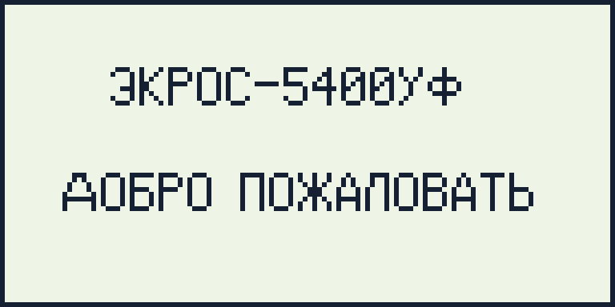
01. [0px] 02. ЭКРОС-5400УФ [93px] 03. [0px] 04. ДОБРО ПОЖАЛОВАТЬ [108px]
- no flagged issues

01. [0px] 02. ЭКРОС-5400УФ [93px] 03. [0px] 04. ДОБРО ПОЖАЛОВАТЬ [108px]
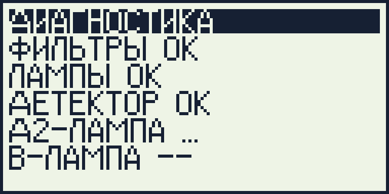
01. ДИАГНОСТИКА [67px] 02. ФИЛЬТРЫ ОК [62px] 03. ЛАМПЫ ОК [50px] 04. ДЕТЕКТОР ОК [66px] 05. Д2-ЛАМПА ... [62px] 06. В-ЛАМПА -- [60px] 07. КАЛИБР. ЛЯМ -- [79px] 08. ТЕМН. ТОК -- [67px]
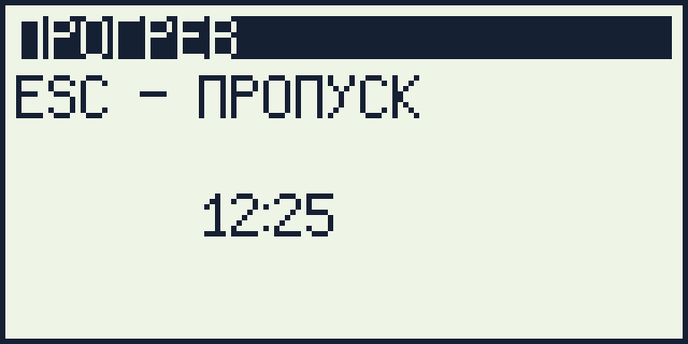
01. ПРОГРЕВ [41px] 02. ESC - ПРОПУСК [75px] 03. [0px] 04. 12:25 [59px]
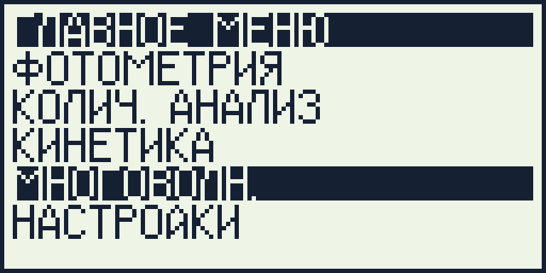
01. ГЛАВНОЕ МЕНЮ [74px] 02. ФОТОМЕТРИЯ [63px] 03. КОЛИЧ. АНАЛИЗ [72px] 04. КИНЕТИКА [47px] 05. МНОГОВОЛН. [57px] 06. НАСТРОЙКИ [53px] 07. 546.2 НМ [44px] 08. ЭТАЛОН [35px]
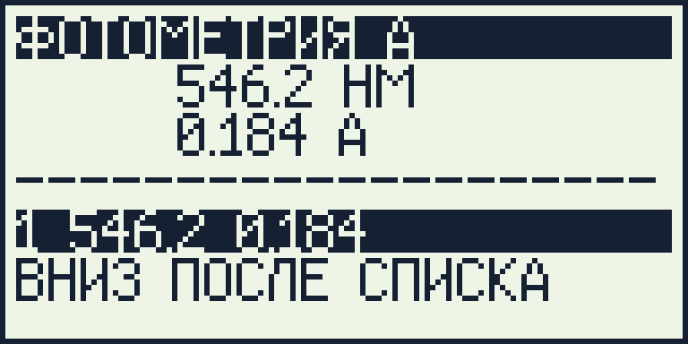
01. ФОТОМЕТРИЯ А [74px] 02. 546.2 НМ [74px] 03. 0.184 А [65px] 04. -------------------- [119px] 05. 1 546.2 0.184 [65px] 06. ВНИЗ ПОСЛЕ СПИСКА [99px]
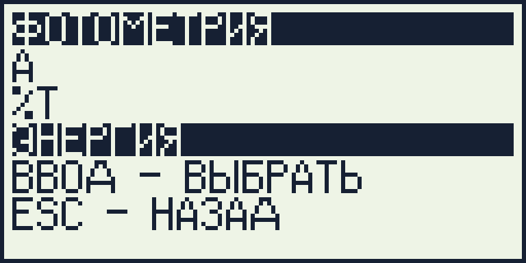
01. ФОТОМЕТРИЯ [63px] 02. А [5px] 03. %Т [11px] 04. ЭНЕРГИЯ [41px] 05. ВВОД - ВЫБРАТЬ [85px] 06. ESC - НАЗАД [65px]
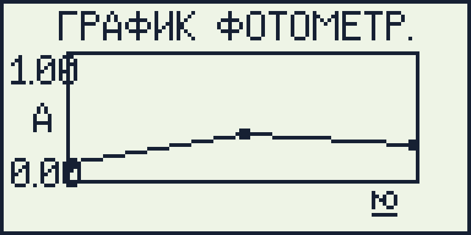
01. ФОТОМЕТРИЯ-ГРАФИК [107px] 02. ТОЧЕК 3 [40px] 03. ЛЯМ 546.2 [50px] 04. A=0.280 [37px] 05. ФАЙЛ - СОХРАНИТЬ [95px] 06. ESC - ЖУРНАЛ [71px]
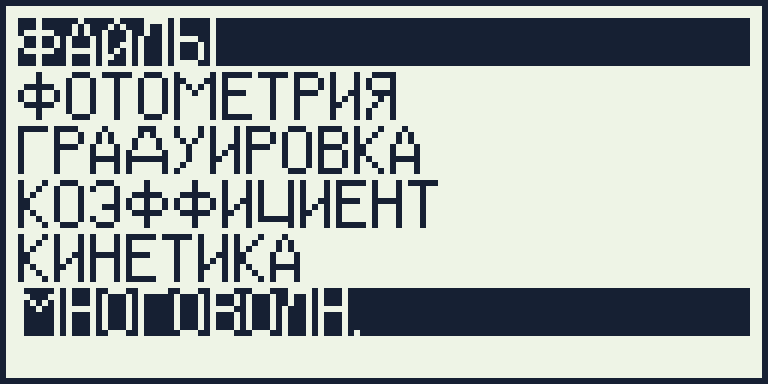
01. ФАЙЛЫ [33px] 02. ФОТОМЕТРИЯ [63px] 03. ГРАДУИРОВКА [67px] 04. КОЭФФИЦИЕНТ [70px] 05. КИНЕТИКА [47px] 06. МНОГОВОЛН. [57px] 07. ВВОД - ОТКРЫТЬ [85px] 08. ESC - НАЗАД [65px]
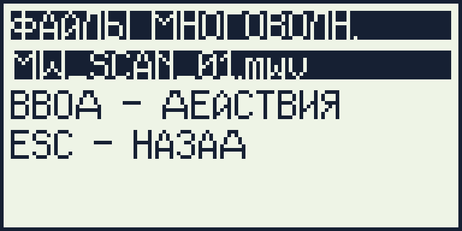
01. ФАЙЛЫ МНОГОВОЛН. [96px] 02. MW_SCAN_01.mwv [82px] 03. ВВОД - ДЕЙСТВИЯ [91px] 04. ESC - НАЗАД [65px]
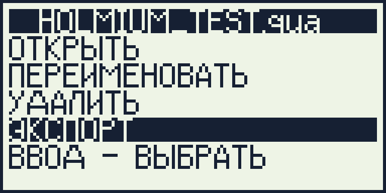
01. HOLMIUM_TEST.qua [103px] 02. ОТКРЫТЬ [43px] 03. ПЕРЕИМЕНОВАТЬ [79px] 04. УДАЛИТЬ [43px] 05. ЭКСПОРТ [41px] 06. ВВОД - ВЫБРАТЬ [85px] 07. ESC - ОТМЕНА [71px]
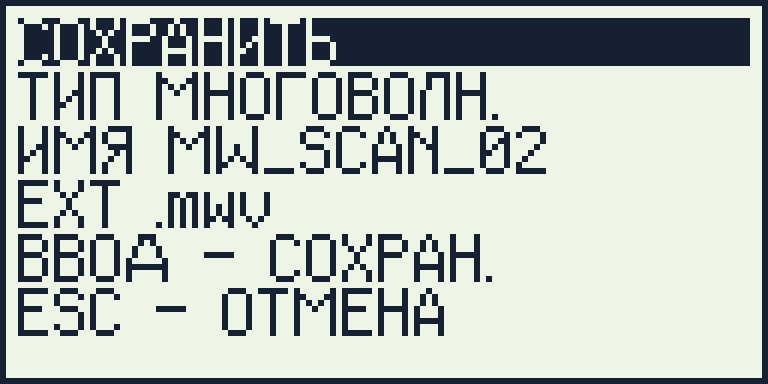
01. СОХРАНИТЬ [53px] 02. ТИП МНОГОВОЛН. [80px] 03. ИМЯ MW_SCAN_02 [88px] 04. EXT .mwv [42px] 05. ВВОД - СОХРАН. [79px] 06. ESC - ОТМЕНА [71px]
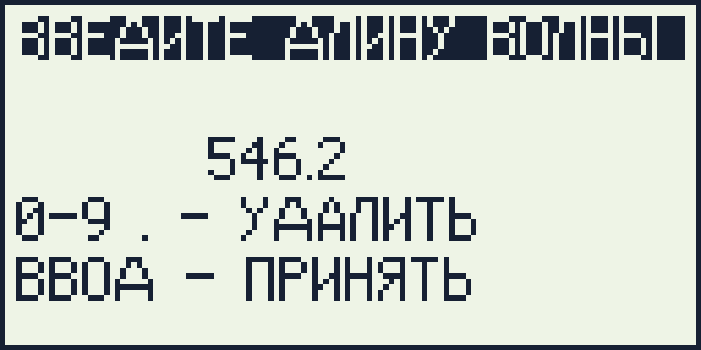
01. ВВЕДИТЕ ДЛИНУ ВОЛНЫ [117px] 02. [0px] 03. 546.2 [60px] 04. 0-9 . - УДАЛИТЬ [84px] 05. ВВОД - ПРИНЯТЬ [83px] 06. ESC - ОТМЕНА [71px]
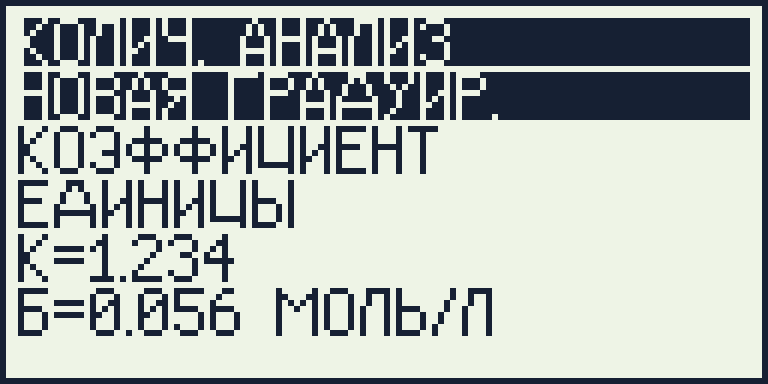
01. КОЛИЧ. АНАЛИЗ [72px] 02. НОВАЯ ГРАДУИР. [80px] 03. КОЭФФИЦИЕНТ [70px] 04. ЕДИНИЦЫ [46px] 05. К=1.234 [36px] 06. Б=0.056 МОЛЬ/Л [79px] 07. ВВОД - ОТКРЫТЬ [85px]
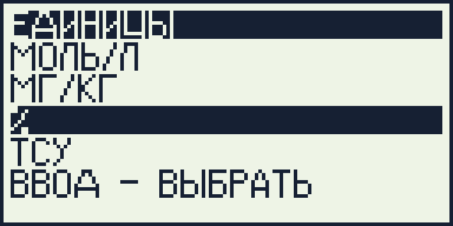
01. ЕДИНИЦЫ [46px] 02. МОЛЬ/Л [36px] 03. МГ/КГ [30px] 04. % [5px] 05. ТСУ [17px] 06. ВВОД - ВЫБРАТЬ [85px] 07. ESC - НАЗАД [65px]
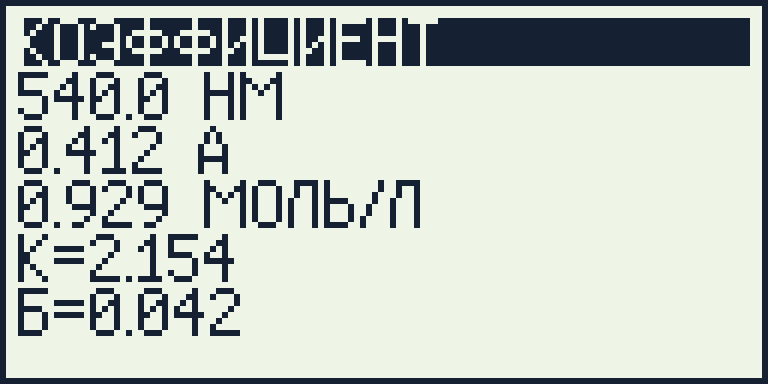
01. КОЭФФИЦИЕНТ [70px] 02. 540.0 НМ [44px] 03. 0.412 А [35px] 04. 0.929 МОЛЬ/Л [67px] 05. К=2.154 [36px] 06. Б=0.042 [37px] 07. START/ФАЙЛ/ESC [83px]
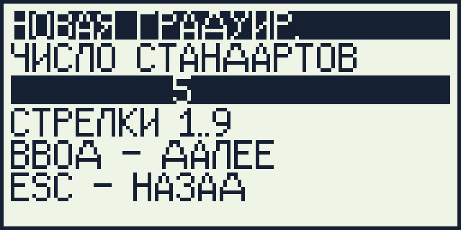
01. НОВАЯ ГРАДУИР. [80px] 02. ЧИСЛО СТАНДАРТОВ [96px] 03. 5 [50px] 04. СТРЕЛКИ 1..9 [61px] 05. ВВОД - ДАЛЕЕ [73px] 06. ESC - НАЗАД [65px]
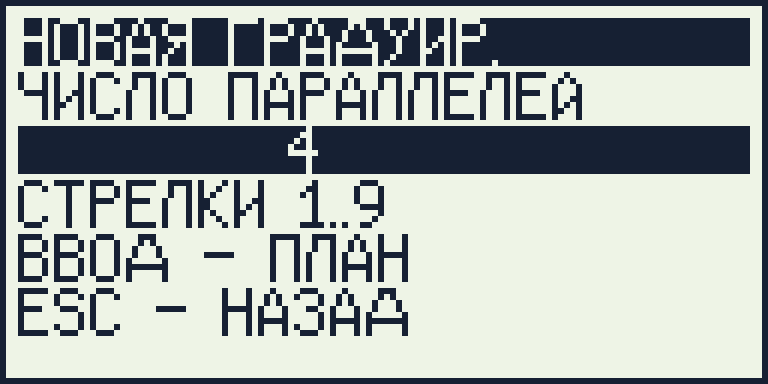
01. НОВАЯ ГРАДУИР. [80px] 02. ЧИСЛО ПАРАЛЛЕЛЕЙ [94px] 03. 4 [50px] 04. СТРЕЛКИ 1..9 [61px] 05. ВВОД - ПЛАН [65px] 06. ESC - НАЗАД [65px]
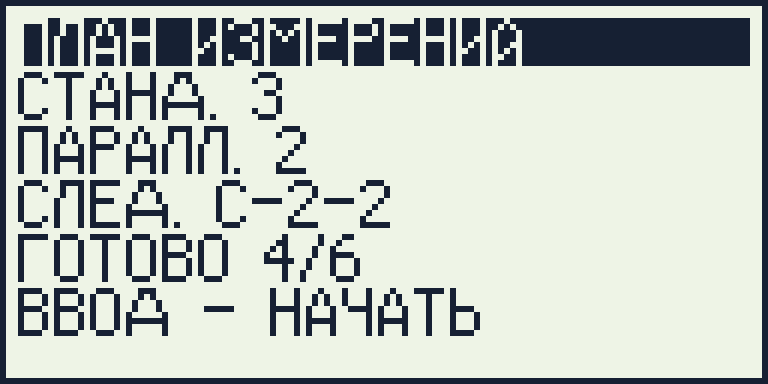
01. ПЛАН ИЗМЕРЕНИЙ [84px] 02. СТАНД. 3 [44px] 03. ПАРАЛЛ. 2 [48px] 04. СЛЕД. С-2-2 [62px] 05. ГОТОВО 4/6 [57px] 06. ВВОД - НАЧАТЬ [77px] 07. НОЛЬ - ОБНУЛИТЬ [87px] 08. ВНИЗ - ЖУРНАЛ [77px]
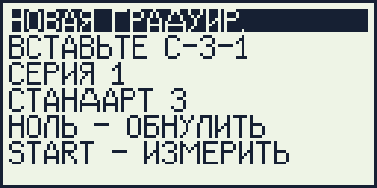
01. НОВАЯ ГРАДУИР. [80px] 02. ВСТАВЬТЕ С-3-1 [81px] 03. СЕРИЯ 1 [39px] 04. СТАНДАРТ 3 [60px] 05. НОЛЬ - ОБНУЛИТЬ [87px] 06. START - ИЗМЕРИТЬ [95px] 07. ESC - ПЛАН [57px]
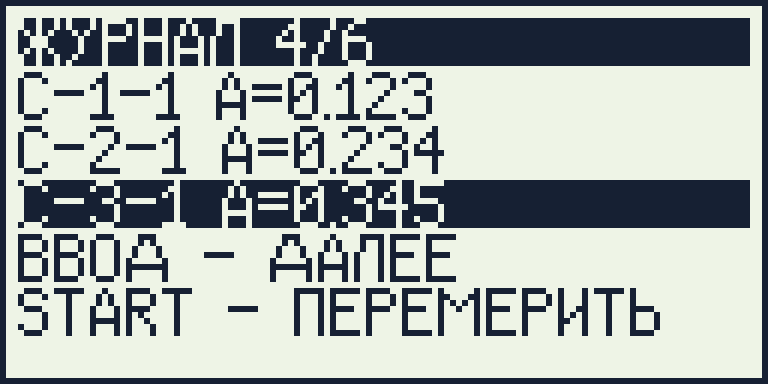
01. ЖУРНАЛ 4/6 [59px] 02. С-1-1 А=0.123 [69px] 03. С-2-1 А=0.234 [71px] 04. С-3-1 А=0.345 [71px] 05. ВВОД - ДАЛЕЕ [73px] 06. START - ПЕРЕМЕРИТЬ [107px] 07. ОЧИСТИТЬ - УДАЛИТЬ [107px]
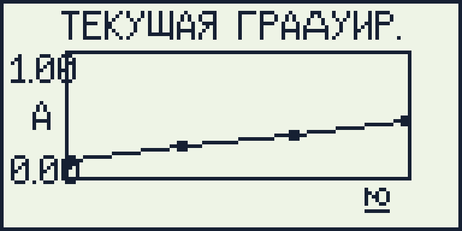
01. ГРАФИК ГРАДУИР. [88px] 02. ГОТОВО 4/6 [57px] 03. ESC - ЖУРНАЛ [71px] 04. ФАЙЛ - СОХРАНИТЬ [95px]
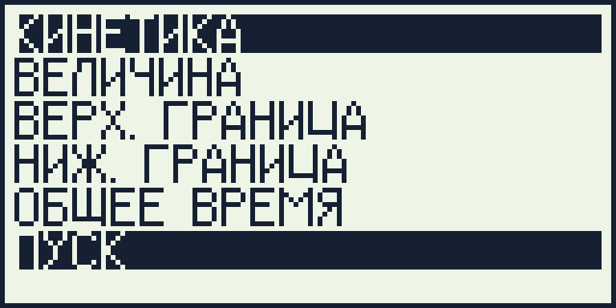
01. КИНЕТИКА [47px] 02. ВЕЛИЧИНА [47px] 03. ВЕРХ. ГРАНИЦА [73px] 04. НИЖ. ГРАНИЦА [69px] 05. ОБЩЕЕ ВРЕМЯ [68px] 06. ПУСК [23px] 07. ВРЕМЯ=120С [60px] 08. А 0.05..1.80 [53px]
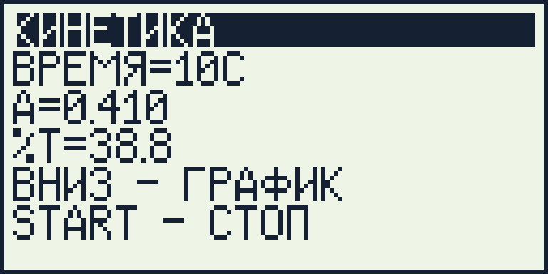
01. КИНЕТИКА [47px] 02. ВРЕМЯ=10С [54px] 03. А=0.410 [36px] 04. %Т=38.8 [37px] 05. ВНИЗ - ГРАФИК [77px] 06. START - СТОП [69px] 07. ESC - МЕНЮ [61px]
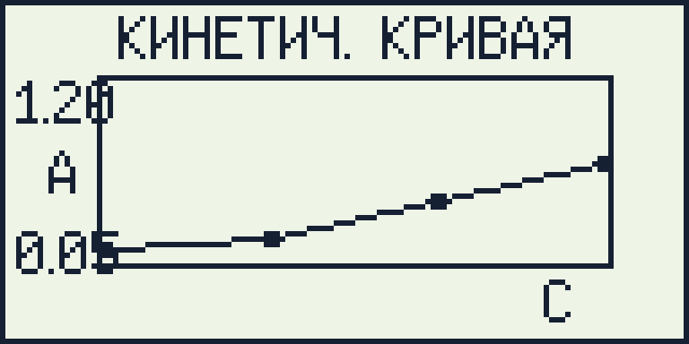
01. КИНЕТИКА-ГРАФИК [91px] 02. ТОЧЕК 4 [40px] 03. A=0.670 [37px] 04. T=21.4 [30px] 05. ФАЙЛ - СОХРАНИТЬ [95px] 06. ESC - ИЗМЕРЕНИЕ [89px]
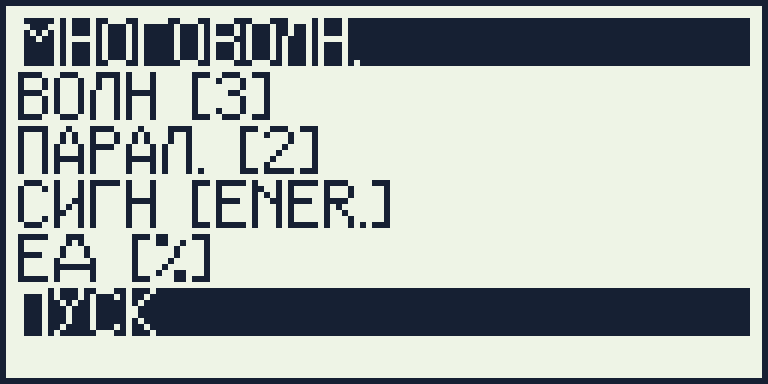
01. МНОГОВОЛН. [57px] 02. ВОЛН [3] [42px] 03. ПАРАЛ. [2] [50px] 04. СИГН [ENER.] [62px] 05. ЕД [%] [32px] 06. ПУСК [23px] 07. ФАЙЛ / λ / ESC [79px]
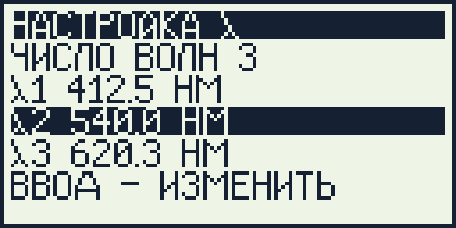
01. НАСТРОЙКА λ [64px] 02. ЧИСЛО ВОЛН 3 [69px] 03. λ1 412.5 НМ [59px] 04. λ2 540.0 НМ [61px] 05. λ3 620.3 НМ [61px] 06. ВВОД - ИЗМЕНИТЬ [91px] 07. ESC - МЕНЮ [61px]
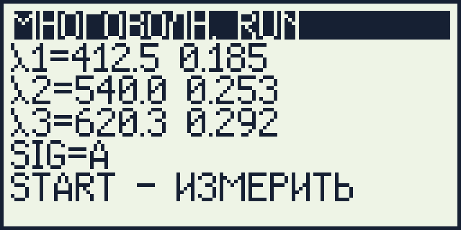
01. МНОГОВОЛН. RUN [80px] 02. λ1=412.5 0.185 [71px] 03. λ2=540.0 0.253 [74px] 04. λ3=620.3 0.292 [74px] 05. SIG=А [27px] 06. START - ИЗМЕРИТЬ [95px] 07. ФАЙЛ / ESC [58px]
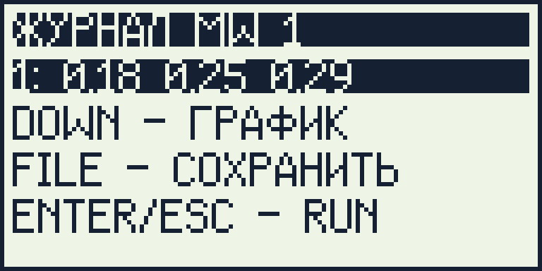
01. ЖУРНАЛ MW 1 [68px] 02. 1: 0.18 0.25 0.29 [80px] 03. DOWN - ГРАФИК [79px] 04. FILE - СОХРАНИТЬ [91px] 05. ENTER/ESC - RUN [86px]
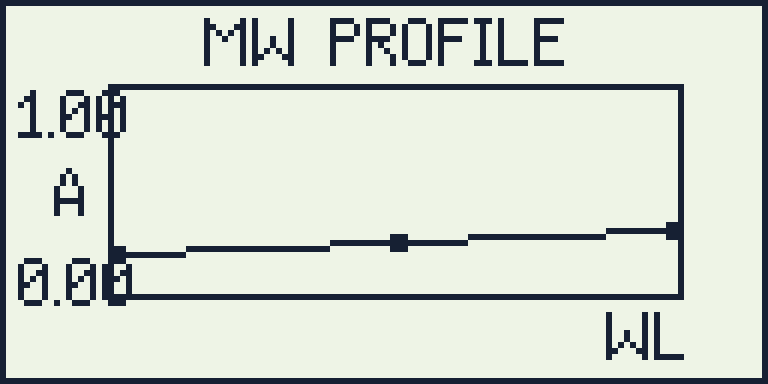
01. СПЕКТР MW [56px] 02. λ1 412.5 0.185 [70px] 03. λ2 540.0 0.253 [73px] 04. λ3 620.3 0.292 [73px] 05. SIG %Т [32px] 06. FILE - СОХРАНИТЬ [91px] 07. ESC - ЖУРНАЛ [71px]
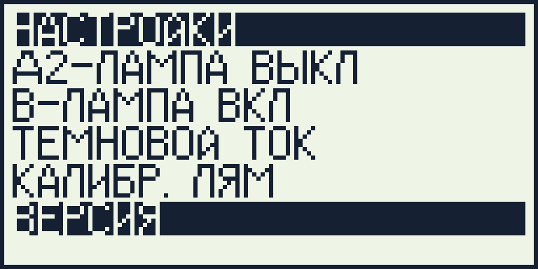
01. НАСТРОЙКИ [53px] 02. Д2-ЛАМПА ВЫКЛ [82px] 03. В-ЛАМПА ВКЛ [66px] 04. ТЕМНОВОЙ ТОК [72px] 05. КАЛИБР. ЛЯМ [62px] 06. ВЕРСИЯ [35px] 07. СБРОС [29px] 08. ЩЕЛЬ=2 САМПЛ=0 [86px]
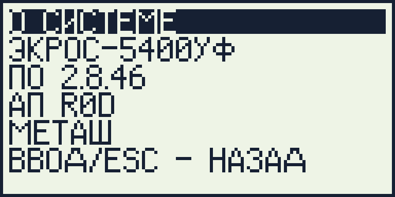
01. О СИСТЕМЕ [54px] 02. ЭКРОС-5400УФ [73px] 03. ПО 2.8.46 [44px] 04. АП R0D [34px] 05. МЕТАШ [33px] 06. ВВОД/ESC - НАЗАД [96px]
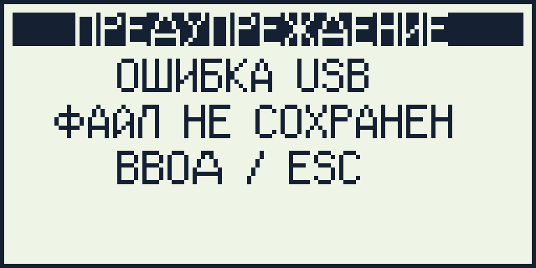
01. ПРЕДУПРЕЖДЕНИЕ [104px] 02. ОШИБКА USB [85px] 03. ФАЙЛ НЕ СОХРАНЕН [105px] 04. ВВОД / ESC [83px]